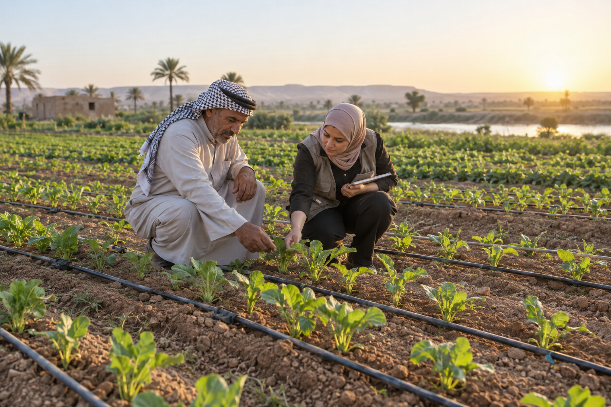
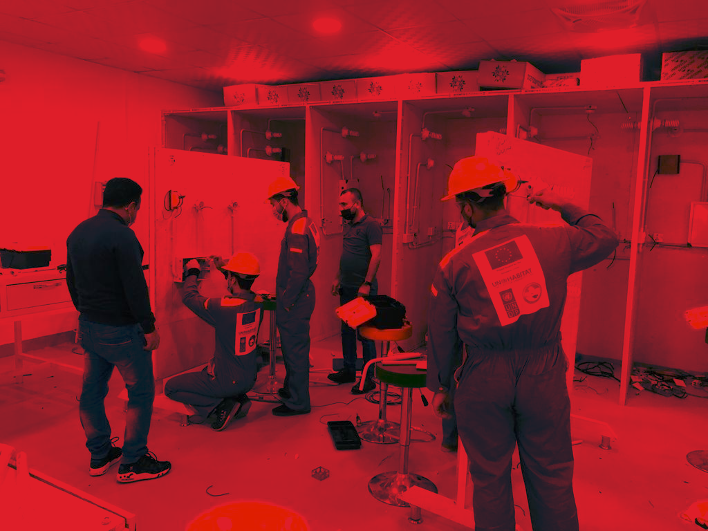
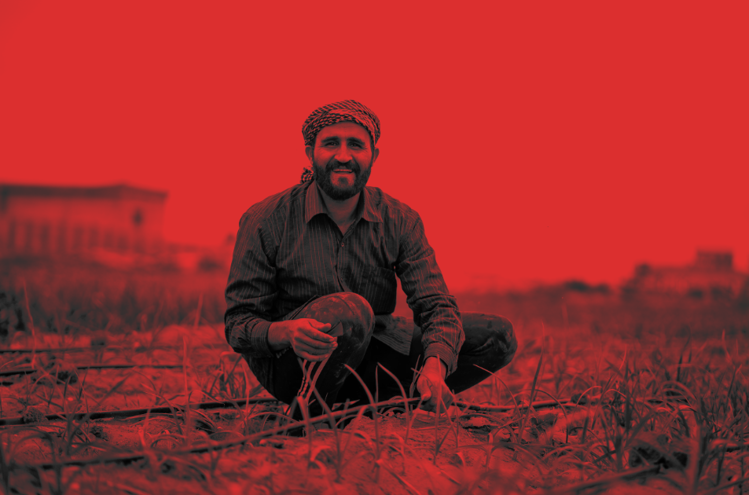

المرونة المناخية
حلول محلية للمياه والزراعة والتكيف البيئي.

ننسّق الجهود لنصنع أثراً يدوم. مع الإنسان والمجتمع، نحو مستقبل أكثر استدامة.
تعرّف عليناعمل محلي يربط الإنسان بأهداف التنمية المستدامة
من نحن
تناسق منظمة مجتمع مدني مستقلة تعمل على تصميم وتنفيذ مبادرات تستجيب للأولويات المحلية، وتجمع بين المعرفة الميدانية والشراكات الفاعلة.
مجالات العمل
نعمل عبر أربعة مسارات تتقاطع فيها احتياجات المجتمع مع فرص المستقبل.
حلول محلية للمياه والزراعة والتكيف البيئي.
مهارات وفرص ومساحات يقودها الشباب.
أدوات رقمية تدعم المؤسسات والخدمات.
حوار ومبادرات تعزز الثقة والعمل المشترك.
مشاريع مختارة

برنامج تدريبي افتراضي يربط التدريب المهني بفرص الاقتصاد الأخضر.

مبادرة نموذجية لتعزيز الممارسات الزراعية الذكية مناخياً.
الأثر بالأرقام
الأخبار والقصص
تدريب عملي يجمع السلامة المهنية بالطاقة الشمسية والاستعداد لسوق العمل.
اقرأ القصة ←جلسة تشاركية تحوّل الاحتياجات اليومية إلى مقترحات قابلة للتنفيذ.
اقرأ القصة ←حقل تجريبي يعرّف المزارعين بالري الدقيق والممارسات الذكية مناخياً.
اقرأ القصة ←شارك ثلاثون شاباً وشابة في برنامج تدريبي افتراضي امتد أربعة أسابيع، وتعلّموا خلاله مبادئ تركيب الأنظمة الشمسية، وإجراءات السلامة، والتواصل مع أصحاب العمل. اختُتم البرنامج بيوم تطبيقي قدّم فيه المشاركون حلولاً مصغرة لاحتياجات مجتمعية واقعية.
جمع اللقاء ممثلين عن الشباب والنساء والوجهاء والجهات الخدمية لمناقشة أولويات الحي. صنّف المشاركون المقترحات وفق الأثر وإمكانية التنفيذ، وخرجوا بخارطة أولية لمبادرات صغيرة يقودها المجتمع بالتعاون مع المؤسسات المحلية.
في الحقل التجريبي، اختبر المزارعون تنظيم الري وفق احتياج النبات ومراقبة رطوبة التربة وتقليل الفاقد. يوضح النموذج كيف يمكن للمعرفة التطبيقية والبيانات البسيطة أن تحسّن الإنتاج وتخفف الضغط على موارد المياه.
شركاء الأثر
شعارات افتراضية لأغراض تصور التصميم فقط.
تواصل معنا
اختر موضوع رسالتك وسنوجّهها إلى الفريق المناسب. هذه الاستمارة تفتح رسالة بريد جاهزة للإرسال.
info@tanasuq.org+964 780 422 8066العراق — الأنبار — حي الشرطةالمعرفة والموارد
تقارير وأدلة من عمل تناسق في التنمية المستدامة.
للاستفسار عن التقارير والموارد المتاحة، تواصل مع فريق المنظمة.
تواصل مع الفريق ←